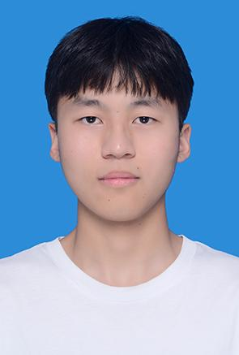

中文简介
我现任深圳理工大学人工智能研究院副教授。此前曾在先进计算与数字工程研究所、中国科学院深圳先进技术研究院担任助理研究员、博士后。我于国立成功大学计算机科学与信息工程系获得博士学位。2023 年获选斐陶斐荣誉学会荣誉会员，获中国台湾信息学会最佳博士论文奖“杰出论文奖”，并入选深圳先进院院长优秀博士后专项计划；2024 年入选国家级人才计划；2025 年获评“深圳市优秀博士后”及深圳先进院“十大优秀博士后”。研究方向包括深度学习、自然语言处理、大语言模型与 AI for Science。
副教授 / Associate Professor
深圳理工大学 · 人工智能研究院
Artificial Intelligence Research Institute · Shenzhen University of Advanced Technology
我现任深圳理工大学人工智能研究院副教授。此前曾在先进计算与数字工程研究所、中国科学院深圳先进技术研究院担任助理研究员、博士后。我于国立成功大学计算机科学与信息工程系获得博士学位。2023 年获选斐陶斐荣誉学会荣誉会员，获中国台湾信息学会最佳博士论文奖“杰出论文奖”，并入选深圳先进院院长优秀博士后专项计划；2024 年入选国家级人才计划；2025 年获评“深圳市优秀博士后”及深圳先进院“十大优秀博士后”。研究方向包括深度学习、自然语言处理、大语言模型与 AI for Science。
I am an Associate Professor at the Artificial Intelligence Research Institute, Shenzhen University of Advanced Technology. I was previously an Assistant Professor/Postdoc at the Institute of Advanced Computing and Digital Engineering, Shenzhen Institute of Advanced Technology, Chinese Academy of Sciences. I received my Ph.D. from the Department of Computer Science and Information Engineering, National Cheng Kung University. In 2023, I was selected as an honorary member of the Phi Tau Phi Scholastic Honor Society, received the Outstanding Dissertation Award of the Taiwan Institute of Information & Computing Machinery, and joined SIAT's Dean's Postdoctoral Merit Special Programme. In 2024, I was selected for a National Level Talent Programme. In 2025, I received the Shenzhen Excellent Postdoctoral Fellow award and was named one of SIAT's Top 10 Outstanding Postdoctoral Researchers. My research interests include deep learning, natural language processing, large language models, and AI for Science.
欢迎科研与项目合作 / Open to collaboration完整论文与引用数据见 Google Scholar。 / Full publication list and citations are available on Google Scholar.
大语言模型可信推理方法研究
Research on Trustworthy Reasoning Methods for Large Language Models · Youth Start-up Project, Guangdong–Hong Kong–Macao Applied Mathematics Center
垂域大语言模型可靠性与可用性协同增强方法研究
Research on Jointly Enhancing Reliability and Usability of Domain-Specific Large Language Models · General Program, Shenzhen Natural Science Foundation
基于多模态人工智能大模型的可解释网络谣言检测方法研究
Research on Explainable Online Rumor Detection Using Multimodal AI Foundation Models · General Program, Guangdong Natural Science Foundation
基于多智能体协同策略的大语言模型生成幻觉优化和评价方法研究
Research on Mitigating and Evaluating Large Language Model Hallucinations through Multi-Agent Collaboration · Youth Program, Guangdong Regional Joint (Guangdong–Shenzhen) Fund
SF Express · Phases I & II: Research on AI Foundation Model Applications for Integrated Business and Finance in Smart Logistics (AI Review of Financial Shared-Service Documents)
Alibaba · Research on Data Construction and Methods for Coding Agents in Real-World Scenarios
基于自动知识反馈与增强的大语言模型幻觉修复与评估方法研究
Research on Repairing and Evaluating Large Language Model Hallucinations through Automatic Knowledge Feedback and Augmentation · 76th China Postdoctoral Science Foundation General Program
SIAT–Shenzhen United Information Joint Laboratory for Educational Artificial Intelligence
科研助理教授 / Research Assistant Professor
复旦大学博士、中国科学院博士后
AI for Science
博士后 / Postdoctoral Researcher
日本筑波大学博士
多模态大模型、世界模型
博士后 / Postdoctoral Researcher
加拿大康考迪亚大学博士
语音多模态大模型
科研助理 / Research Assistant
澳门大学硕士
Master's, University of Macau
2026 级博士生 / Ph.D. Student
深理工—深圳大学联合培养
SUAT–Shenzhen University Joint Program
2024 级客座博士生 / Visiting Ph.D. Student
中国科学院大学
University of Chinese Academy of Sciences
2025 级硕士生 / Master's Student
深理工—南科大联合培养
SUAT–SUSTech Joint Program
2025 级硕士生 / Master's Student
深理工—南科大联合培养
SUAT–SUSTech Joint Program
2026 级硕士生 / Master's Student
深理工—南科大联合培养
SUAT–SUSTech Joint Program
2026 级硕士生 / Master's Student
深理工—南科大联合培养
SUAT–SUSTech Joint Program
2026 级硕士生 / Master's Student
深理工—南科大联合培养
SUAT–SUSTech Joint Program

2027 级硕士生（推免） / Incoming Master's Student
深理工—深大联合培养
SUAT–Shenzhen University Joint Program
2025 级本科生 / Undergraduate Student
深圳理工大学
Shenzhen University of Advanced Technology
2025 级本科生 / Undergraduate Student
深圳理工大学
Shenzhen University of Advanced Technology
2023 级实习生 / Intern
澳门科技大学
Macau University of Science and Technology
ACL ARR 2024–2026
AAAI 2026–2027 · EMNLP 2023 · PAKDD 2024 · ECML-PKDD 2023–2025 · AACIP 2023 · AFccT 2023 · AICS 2022–2024 · CNIOT 2022–2024
期刊 / Journals
IEEE/ACM Transactions on Audio, Speech and Language Processing · Information Processing and Management · npj Climate Action · Knowledge-Based Systems · Engineering Applications of Artificial Intelligence · CAAI Transactions on Intelligence Technology · Social Network Analysis and Mining · Multimedia Systems · International Journal of Machine Learning and Cybernetics · Journal of Web Engineering
会议 / Conferences
ACL ARR 2023–2024 · COLING 2024–2025 · NeurIPS 2023–2025 · EMNLP 2023–2024 · ICLR 2024, 2026 · ICASSP 2023–2024 · IJCAI 2022–2023 · KDD 2022 · AAMAS 2022 · CIKM 2022 · PAKDD 2022 · ICTAI 2021
完整论文列表及引用数据请访问 Google Scholar。 / For citations and the full list, visit Google Scholar.
Shuaimin Li, Liyang Fan, Zeyang Li, Zhuoyue Wan, Yufang Lin, Shiwen Ni†, Feiteng Fang, Hamid Alinejad-Rokny, Yuanfeng Song, Kun Jing, Chen Jason Zhang, Min Yang. SrDetection: A Self-Referential Framework for Data Leakage Detection in Code Large Language Models, ACL 2026. [Paper] [Github] (CCF A)
Siyi Li, Jiajun Shi, Shiwen Ni†, Ge Zhang, Shuaimin Li, Shijian Wang, Zhoufutu Wen, Yizhi Li, Hamid Alinejad-Rokny, Jiaheng Liu, Min Yang, Wenhao Huang. CoTJudger: A Graph-Driven Framework for Automatic Evaluation of Chain-of-Thought Efficiency and Redundancy in LRMs, ACL 2026. [Paper] [Github] (CCF A)
Guhong Chen, Chenghao Sun, Cheng Fu, Qiyao Wang, Zhihong Huang, Chaopeng Wei, Guangxu Chen, Feiteng Fang, Ahmadreza Argha, Bing Zhao, Xander Xu, Qi Han, Hamid Alinejad-Rokny, Qiang Qu, Binhua Li, Shiwen Ni†, Min Yang, Hu Wei, Yongbin Li. Beyond Quantity: Trajectory Diversity Scaling for Code Agents, ACL 2026. [Paper] [Github] (CCF A)
Chengguang Gan, Zhixi Cai, Yanbin Wei, Yunhao Liang, Shiwen Ni†, Tatsunori Mori. M-MRE: Extending the Mutual Reinforcement Effect to Multimodal Information Extraction, ACL 2026. [Paper] (CCF A)
Qiyao Wang, Guhong Chen, Hongbo Wang, Huaren Liu, Minghui Zhu, Zhifei Qin, Linwei Li, Yilin Yue, Shiqiang Wang, Jiayan Li, Yihang Wu, Ziqiang Liu, Longze Chen, Run Luo, Liyang Fan, Jiaming Li, Lei Zhang, Kan Xu, Hamid Alinejad-Rokny, Chengming Li, Shiwen Ni†, Yuan Lin, Min Yang. Towards IP Intelligence: Benchmarking Large Language Models on Intellectual Property Knowledge and Practice, ACL 2026. [Paper] [Github] (CCF A)
David Ma, Huaqing Yuan, Xingjian Wang, Qianbo Zang, Tianci Liu, Xinyang He, Yanbin Wei, Jiawei Guo, Ni Jiahui, Zhenzhu Yang, Meng Cao, Shanghaoran Quan, Yizhi Li, Wangchunshu Zhou, Jiaheng Liu, Wenhao Huang, Ge Zhang, Shiwen Ni†, Xiaojie Jin. ScaleLong: A Multi-Timescale Benchmark for Long Video Understanding, ICLR 2026. [Paper] [Github] (CCF A)
David Ma, Yuanxing Zhang, Jincheng Ren, Jarvis Guo, Yifan Yao, Zhenlin Wei, Zhenzhu Yang, Zhongyuan Peng, Boyu Feng, Jun Ma, Xiao Gu, Zhoufutu Wen, King Zhu, Yancheng He, Meng Cao, Shiwen Ni, Jiaheng Liu, Wenhao Huang, Ge Zhang, Xiaojie Jin. IV-Bench: A Benchmark for Image-Grounded Video Perception and Reasoning in Multimodal LLMs, ICLR 2026. [Paper] [Github] (CCF A)
Shuaimin Li, Liyang Fan, linyufang, Zeyang Li, Xian Wei, Shiwen Ni†, Hamid Alinejad-Rokny, Min Yang†. Automatic Paper Reviewing with Heterogeneous Graph Reasoning over LLM-Simulated Reviewer-Author Debates, AAAI 2026. [Paper] (CCF A)
Shuaimin Li, Chen Jason Zhang, Xuanang Chen, Anni Peng, Zhuoyue Wan, Yuanfeng Song, Shiwen Ni, Min Yang, Fei Hao, Raymond Chi-Wing Wong. VisPoison: An Effective Backdoor Attack Framework for Tabular Data Visualization Models, ICDE 2025. (CCF A)
Xinrun Du, Yifan Yao, Kaijing Ma, Bingli Wang, Tianyu Zheng, King Zhu, Minghao Liu, Yiming Liang, Xiaolong Jin, Zhenlin Wei, Chujie Zheng, Kaixin Deng, Shawn Gavin, Shian Jia, Sichao Jiang, Yiyan Liao, Rui Li, Qinrui Li, Sirun Li, Yizhi Li, Yunwen Li, David Ma, Yuansheng Ni, Haoran Que, Qiyao Wang, Zhoufutu Wen, Siwei Wu, Tyshawn Hsing, Ming Xu, Zhenzhu Yang, Zekun Moore Wang, Junting Zhou, Yuelin Bai, Xingyuan Bu, Chenglin Cai, Liang Chen, Yifan Chen, Chengtuo Cheng, Tianhao Cheng, Keyi Ding, Siming Huang, Yun Huang, Yaoru Li, Yizhe Li, Zhaoqun Li, Tianhao Liang, Chengdong Lin, Hongquan Lin, Yinghao Ma, Tianyang Pang, Zhongyuan Peng, Zifan Peng, Qige Qi, Shi Qiu, Xingwei Qu, Shanghaoran Quan, Yizhou Tan, Zili Wang, Chenqing Wang, Hao Wang, Yiya Wang, Yubo Wang, Jiajun Xu, Kexin Yang, Ruibin Yuan, Yuanhao Yue, Tianyang Zhan, Chun Zhang, Jinyang Zhang, Xiyue Zhang, Xingjian Zhang, Yue Zhang, Yongchi Zhao, Xiangyu Zheng, Chenghua Zhong, Yang Gao, Zhoujun Li, Dayiheng Liu, Qian Liu, Tianyu Liu, Shiwen Ni (Organization Committee Member), Junran Peng, Yujia Qin, Wenbo Su, Guoyin Wang, Shi Wang, Jian Yang, Min Yang, Meng Cao, Xiang Yue, Zhaoxiang Zhang, Wangchunshu Zhou, Jiaheng Liu, Qunshu Lin, Wenhao Huang, Ge Zhang, SuperGPQA: Scaling LLM Evaluation across 285 Graduate Disciplines, NeurIPS 2025. [Paper] [Huggingface] [量子位] (CCF A)
Dingwei Chen, Ziqiang Liu, Feiteng Fang, Chak Tou Leong, Shiwen Ni, Ahmadreza Argha, Hamid Alinejad-Rokny, Min Yang†, Chengming Li†. Expanding before Inferring: Enhancing Factuality in Large Language Models through Premature Layers Interpolation, EMNLP 2025. [Paper] (CCF B)
Sunbowen Lee*, Junting Zhou*, Chang Ao*, Kaige Li, Xinrun Du, Sirui He, Haihong Wu, Tianci Liu, Jiaheng Liu, Hamid Alinejad-Rokny, Min Yang†, Yitao Liang†, Zhoufutu Wen†, Shiwen Ni†. Quantification of Large Language Model Distillation, ACL 2025. [Paper] [Github] [新智元] (CCF A)
King Zhu*, Qianbo Zang*, Shian Jia*, Siwei Wu*, Feiteng Fang*, Yizhi Li, Shawn Gavin, Tuney Zheng, Jiawei Guo, Bo Li, Haoning Wu, Xingwei Qu, Jian Yang, Zachary Liu, Xiang Yue, JH Liu, Chenghua Lin, Min Yang, Shiwen Ni†, Wenhao Huang†, Ge Zhang†. LIME: Less Is More for MLLM Evaluation, ACL 2025. [Paper] [Github] (CCF A)
Chenhao Zhang*, Xi Feng*, Yuelin Bai, Xinrun Du, Jinchang Hou, Kaixin Deng, Guangzeng Han, Qinrui Li, Bingli Wang, Jiaheng Liu, Xingwei Qu, Yifei Zhang, Qixuan Zhao, Yiming Liang, Ziqiang Liu, Feiteng Fang, Min Yang, Wenhao Huang, Chenghua Lin, Ge Zhang†, Shiwen Ni†. Can MLLMs Understand the Deep Implication Behind Chinese Images?, ACL 2025. [Paper] [Huggingface] [深度学习自然语言处理] (CCF A)
Guhong Chen*, Liyang Fan*, Zihan Gong, Nan Xie, Zixuan Li, Ziqiang Liu, Chengming Li, Qiang Qu, Shiwen Ni†, Min Yang†. Agentcourt: Simulating court with adversarial evolvable lawyer agents, ACL 2025. [Paper] [Github] [新智元] (CCF A)
Xintong Sun*, Chi Wei*, Minghao Tian, Shiwen Ni†. Earley-Driven Dynamic Pruning for Efficient Structured Decoding, ICML 2025. [Paper] [Github] (CCF A)
Shiwen Ni, Xiangtao Kong, Chengming Li, Xiping Hu, Ruifeng Xu, Jia Zhu†, Min Yang†. Training on the Benchmark Is Not All You Need, AAAI 2025. [Paper] [Github] [深度学习自然语言处理] (CCF A)
Shiwen Ni*, Hao Cheng*, Min Yang†. Pre-training, Fine-tuning and Re-ranking: A Three-Stage Framework for Legal Question Answering, ICASSP 2025. [Paper] (CCF B)
Yuelin Bai*, Xinrun Du*, Yiming Liang, Yonggang Jin, Ziqiang Liu, Junting Zhou, Tianyu Zheng, Xincheng Zhang, Nuo Ma, Zekun Wang, Ruibin Yuan, Haihong Wu, Hongquan Lin, Wenhao Huang, Jiajun Zhang, Wenhu Chen, Chenghua Lin, Jie Fu, Min Yang, Shiwen Ni†, Ge Zhang†. COIG-CQIA: Quality is All You Need for Chinese Instruction Fine-tuning, NAACL 2025. [Paper] [HuggingFace] [量子位] [机器之心] (CCF B)
Ziqiang Liu*, Feiteng Fang*, Xi Feng*, Xinrun Du*, Chenhao Zhang*, Zekun Wang, Yuelin Bai, Qixuan Zhao, Liyang Fan, Chengguang Gan, Hongquan Lin, Jiaming Li, Yuansheng Ni, Haihong Wu, Yaswanth Narsupalli, Zhigang Zheng, Chengming Li, Xiping Hu, Ruifeng Xu, Xiaojun Chen, Min Yang, Jiaheng Liu, Ruibo Liu, Wenhao Huang, Ge Zhang†, Shiwen Ni†. II-Bench: An Image Implication Understanding Benchmark for Multimodal Large Language Models, NeurIPS 2024. [Paper] [Huggingface] [深度学习自然语言处理] (CCF A)
Zichong Wang, Zhibo Chu, Thang Viet Doan, Shiwen Ni, Min Yang, Wenbin Zhang. History, development, and principles of large language models: an introductory survey, AI and Ethics, 2024. [Paper]
Shiwen Ni, Min Yang†. Educational-Psychological Dialogue Robot Based on Multi-Agent Collaboration, ICSR 2024. [Paper]
Nan Xie*, Yuelin Bai*, Hengyuan Gao, Feiteng Fang, Qixuan Zhao, Zhijian Li, Ziqiang Xue, Liang Zhu, Shiwen Ni†, Min Yang†. DeliLaw: A Chinese Legal Counselling System Based on a Large Language Model, CIKM 2024. [Paper] [System] (CCF B)
Jinchang Hou*, Chang Ao*, Haihong Wu, Xiangtao Kong, Zhigang Zheng, Daijia Tang, Chengming Li, Xiping Hu, Ruifeng Xu, Shiwen Ni†, Min Yang†. E-EVAL: A Comprehensive Chinese K-12 Education Evaluation Benchmark for Large Language Models, ACL 2024. [Paper] [Github] [深度学习自然语言处理] (CCF A)
Shiwen Ni*, Dingwei Chen*, Chengming Li†, Xiping Hu, Ruifeng Xu, Min Yang†. Forgetting before Learning: Utilizing Parametric Arithmetic for Knowledge Updating in Large Language Models, ACL 2024. [Paper] (CCF A)
Feiteng Fang*, yuelin bai*, Shiwen Ni†, Min Yang†, Xiaojun Chen, Ruifeng Xu. Enhancing Noise Robustness of Retrieval-Augmented Language Models with Adaptive Adversarial Training, ACL 2024. [Paper] [Github] (CCF A)
Shiwen Ni*, Minghuan Tan*, Yuelin Bai, Fuqiang Niu, Min Yang†, Bowen Zhang†, Ruifeng Xu, Xiaojun Chen, Chengming Li, Xiping Hu, Ye Li, Jianping Fan. MoZIP: A Multilingual Benchmark to Evaluate Large Language Models in Intellectual Property, COLING 2024. [Paper] [Github] (CCF B)
Shiwen Ni, Min Yang†, Ruifeng Xu, Chengming Li, Xiping Hu. Layer-wise Regularized Dropout for Neural Language Models, COLING 2024. [Paper] (CCF B)
Shiwen Ni, Jiawen Li, Min Yang, Hung-Yu Kao†. DropAttack: A Random Dropped Weight Attack Adversarial Training for Natural Language Understanding, IEEE/ACM Transactions on Audio, Speech and Language Processing, 2023. [Paper] [Github] (JCR Q1)
Shiwen Ni, Hung-Yu Kao†. KPT++: Refined Knowledgeable Prompt Tuning for Few-shot Text Classification, Knowledge-Based Systems, 2023. [Paper] (JCR Q1)
Shiwen Ni, Hung-Yu Kao†. Masked Siamese Prompt Tuning for Few-Shot Natural Language Understanding. IEEE Transactions on Artificial Intelligence, 2023. [Paper]
Jiawen Li, Ronghui Li, Shiwen Ni, Hung-Yu Kao†. EPRD: Exploiting prior knowledge for evidence-providing automatic rumor detection, Neurocomputing, 2023. [Paper] (JCR Q1)
Shiwen Ni, Jiawen Li, Hung-Yu Kao†. R-AT: Regularized Adversarial Training for Natural Language Understanding, EMNLP 2022. [Paper] [Github] (CCF B)
Shiwen Ni, Hung-Yu Kao†. ELECTRA Is A Zero-shot Learner, Too, arXiv preprint arXiv:2207.08141, 2022. [Paper] [Github]
Shiwen Ni, Jiawen Li, Hung-Yu Kao†. True or False: Does the Deep Learning Model Learn to Detect Rumors? TAAI 2021. [Paper]
Jiawen Li, Shiwen Ni, Hung-Yu Kao†. Meet The Truth: Leverage Objective Facts and Subjective Views for Interpretable Rumor Detection, ACL 2021. [Paper] (CCF A)
Shiwen Ni, Hung-Yu Kao†. PSForest: Improving Deep Forest via Feature Pooling and Error Screening, ACML 2020. [Paper] (CCF C)
* 共同第一作者 / Equal contribution † 通讯作者 / Corresponding author